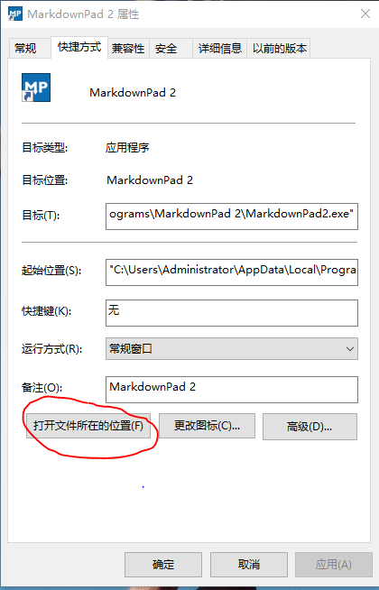
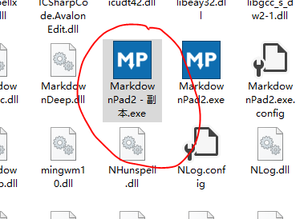
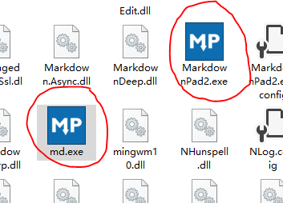
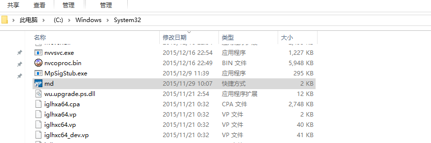
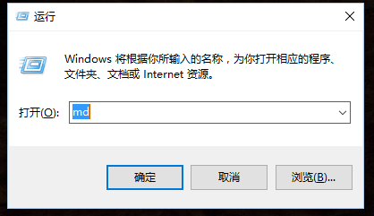

第一步 找到你想要快速打开软件的安装路径（软件markdownpad2举例）
markdownpad2

第二步 创建软件启动程序exe的快捷方式
选中MarkdownPad2.exe文件，在此文件夹中复制粘贴一份相同的文件并将其重命名为md.exe
md.exe

第三步 重命名快捷方式为一个简单的代号
markdown
md

第四步 将快捷方式剪贴到C:\Windows\System32中
C:\Windows\System32

第五步 然后在运行中输入软件快捷方式重命名后的名字（例如：md ）后回车即可
